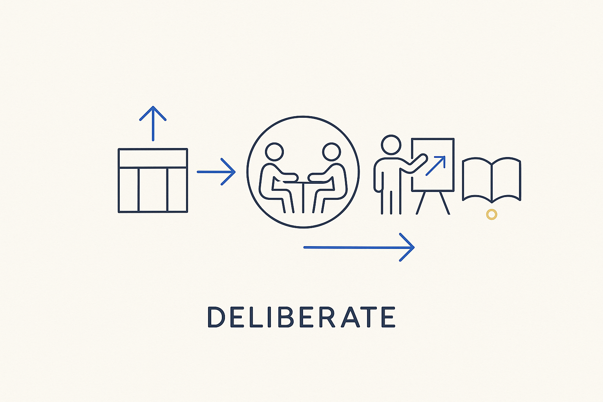

Nothing by accident — structure, meetings, modeling and learning are all chosen on purpose. Deliberate is the word underneath the whole approach: intentional, not ad-hoc.

> Nothing by accident — structure, meetings, modeling and learning are all chosen on purpose. Deliberate is the word underneath the whole approach: intentional, not ad-hoc.
Deliberate is the word that keeps surfacing because it runs underneath everything. Results come from deliberate structure, not luck; a good meeting is deliberately prepared, not improvised; a model is deliberately built from proven patterns, not stumbled into; learning is deliberate practice, not hope. The opposite of deliberate is ad-hoc, accidental, by-default — and by-default is exactly where the old, stuck ways of working came from.
To be deliberate is to make the choice on purpose and be able to say why. Why this pattern, why this meeting, why this tool, why now — each answered, not assumed. It is the quiet common thread through the whole vocabulary: structure beats magic because the structure is deliberate, discipline is deliberate habit, challenging is deliberately questioning the default, efficiency is deliberately spending where it compounds. Take deliberateness out and each of them collapses back into chance.
This is what separates a system from a scramble. A deliberate team isn’t slower — it wastes less, because it stops doing things out of habit that no longer serve the outcome. Choose on purpose, know why, and let nothing important happen by accident.
Where it lives: the signature principle of Breakthrough Modeling — intentional by design, nothing by accident.